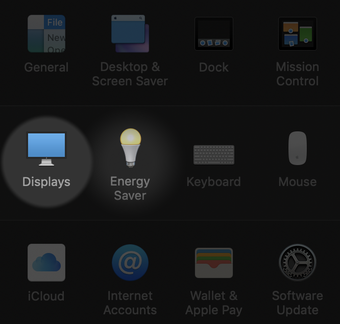
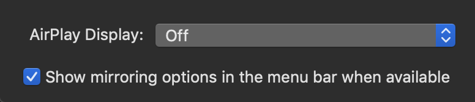

显示“无信号”信息时的解决方案¶
如果显示”无信号”信息，请首先尝试以下解决方案
- 按 [Source Search]（搜索信号源） 按钮，等几秒待图像显示。
- 检查投影所需的所有电缆已牢固连接。
- 请确保所连的计算机不处于睡眠模式。
- 关闭投影机和所连的计算机或视频源，然后再重新打开。
如果以上方式无法解决，则根据所使用的计算机系统进行调整
Mac 系统
- 找到系统设置（System Preferences)
- 找到显示器（Displays）

- 勾选下方的“在菜单栏中显示镜像选项”

- Windows 系统
- 按住 Windows 电脑的 Fn 键，然后按标有监视器图标或 CRT/LCD 的按键，等几秒待图像显示。
- 如果 Windows 电脑和投影机没有显示相同图像，请检查 Windows 显示实用程序，确保外部监视器端口被启用，扩展台式电脑模式被禁用。(请参阅计算机或 Windows 手册了解相关说明。)